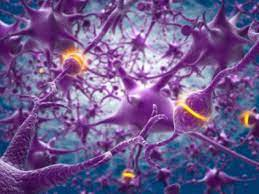

Мозак (лат. encephalon) је најзначајнији део нервног система. Смештен је у лобањској чаури и обавијен можданим опнама: тврдом, паучинастом и меком. Просечна маса мозга одраслог човека износи 1.350 g, али интелектуалне способности нису сразмерне маси и величини мозга.
Основни делови мозга су:
Продужена мождина, варолијев мост и средњи мозак заједнички се називају мождано стабло. Централни канал кичмене мождине се наставља у мозгу, али се проширује и образује четири шупљине-мождане коморе, које су испуњене ликвором.
Мозак је најсложенији орган људског тела. Део је централног нервног система и налази се у лобањи. Управља свим виталним активностима које су неопходне да би организам преживео. Све људске емоције су контролисане мозгом. Он такође шаље и прима безбројне сигнале од свих осталих делова тела и спољашње средине. Мозак нас чини свесним, емотивним и интелигентним бићима.
У мозгу се налазе два типа ћелија: нервне и глијалне ћелије.
Нервне ћелије (неурони) се од осталих ћелија разликују по томе што имају способност проводљивости нервних импулса. Људски мозак је изграђен од око 10 милијарди нервних ћелија. Свака нервна ћелија се састоји од тела неурона и два типа наставака: дендрита и аксона. Тело неурона (сома) садржи једро (у коме је смештена ДНК), ендоплазматични ретикулум и рибозоме (за синтезу протеина) и митохондрије (за добијање енергије) – оно обавља све оне функције које су ћелији неопходне да би преживела. Аксони и дендрити служе за комуникацију између ћелија. Дендрити су кратки, разгранати наставци који спроводе надражај ка телу нервне ћелије. Аксон (неурит, нервно влакно) преноси надражај од тела неурона ка следећем неурону, он може бити прекривен посебном опном која је изграђена од глијалних ћелија (олигодендроцита) и која убрзава проток импулса кроз аксон. Свака нервна ћелија је преко синапси (веза између аксона једне и дендрита друге ћелије) повезана са око 10.000 других нервних ћелија.
Глијалне ћелије (глије) имају низ функција које омогућавају опстанак и правилно функционисање нервних ћелија: потпорна (својим продужецима граде потпорну мрежу можданог ткива), изолаторна (у пределу синапсе врше електричну изолацију), одбрамбена (могу да се трансформишу у макрофаге), транспортна (транспортују хранљиве материје од крвних судова до нервних ћелија мозга), имају улогу у локалној хомеостази, врше фагоцитозу непотребних материја, граде мијелински омотач аксона. У мозгу их има око 10 пута више него нервних ћелија.
